의공기사 (2012-09-15 기출문제)
1과목: 기초의학 및 의공학
1. 그림의 ECG 그래프와 심장의 동작 중에서 잘못 연결된 것은?
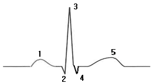
- 1 : P-wave, 심방의 수축
- 2 : s1, mitral value의 닫힘
- 2,3,4 : QRS-wave, 심실 수축
- 5 : T-wave, 심실 재분극
(정답률: 86%)

2. 정상적인 심장 전도 순서와 일치하게 나열된 순서는?
- SA node-AV node-Purkinje system-His bundle
- Purkinje system-His bundle- SA node-AV node
- SA node-AV node-His bundle-Purkinje system
- SA node-His bundle-AV node-Purkinje system
(정답률: 80%)
3. 금속저항 온도계를 이용한 온도측정 회로에 큰 전류가 흐르도록 설계해서는 안 되는 이유는?
- 제작상의 어려움 때문에
- 회로 구성의 어려움 때문에
- 온도센서의 부식 때문에
- 줄열로 인한 회로의 가열 때문에
(정답률: 89%)
4. 어떤 금속의 반전지 전위(Half-cell potential)에 대한설명으로 옳은 것은?
- 전해질 내에서 수소 1기압의 기준 전극과의 전위차이다.
- 외부의 기계적 압력에 의해 발생하는 전위차이다.
- 두 금속의 열전도율 차에 의해 발생하는 전위이다.
- 두 금속의 열팽창률 차에 의해 발생하는 전위이다.
(정답률: 82%)
5. 의료용 센서를 일반 센서와 비교할 때 추가적으로 고려해야 할 사항에 속하는 것은?
- 감도
- 동작범위
- 복귀도
- 안전성
(정답률: 93%)
6. 탄성한계 내에서 압력 또는 변위에 따른 전선의 길이,직경의 변화를 이용하는 트랜스듀서는?
- 스트레인게이지
- 압전소자
- 서미스터
- 바리스터
(정답률: 80%)
7. 인체를 이루는 체강 중에서 심장과 폐가 존재하는 공간은?
- 흉강
- 복강
- 두개당
- 척추강
(정답률: 93%)
8. 생체전기 신호측정에서 전극에 대한 설명으로 옳지 않은 것은?
- 전해질은 이온을 포함한 용액이고, 이온의 이동에 의해 전류가 생성된다.
- 이온에 의한 전류를 전자의 이동에 의한 전류로 변환하는 기능을 갖는 것을 전극이라 한다.
- 전극은 전극표면에서의 화학반응에 의하여 일정한 전위를 가지는 평형상태를 유지하고 있다.
- 평형상태에서의 전위는 전극반응에 관여하는 물질의 농도에 의존하고 온도와는 무관하다.
(정답률: 85%)
9. 안전 상태에서 폐포내 공기의 이산화탄소 농도는 얼마인가?
- 32[mmHg]
- 40[mmHg]
- 46[mmHg]
- 50[mmHg]
(정답률: 68%)
10. 최대한의 노력으로 공기를 들이마셨을 때, 폐 내에 존재하는 공기의 양은?
- 폐활량
- 총폐용량
- 흡식용량
- 기능적 잔기용량
(정답률: 72%)
11. 다음 중 동맥혈압이 가장 높은 인체의 부위는?
- 다리
- 목
- 가슴
- 머리
(정답률: 84%)
12. 다음 중 일회용 금속판 전극을 사용할 수 없는 곳은?
- 등
- 복부
- 넓적다리
- 소장
(정답률: 92%)
13. 방향과 관련된 다음 해부학적 용어의 ( )에 적당한 것은?
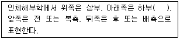
- Left
- Medial
- Inferior
- Lateral
(정답률: 79%)
14. 센서 중에서 광전효과 사용하여 빛을 감지하며 광전자방출용 음극과 여러 개의 전자 방출용 전극인 다이노드, 2차 전자를 수집하는 양극의 plate가 진공관 안에 봉입된 구조로 이루어진 센서는?
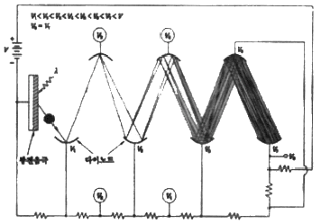
- 포토다이오드
- 광전관
- CdS셀
- 광전자 증배관
(정답률: 90%)
15. 생체신호 측정용 전극에서 유리모세관을 이용하여제작되며, 일반적으로 3mol의 KCI을 봉입하고 와이어전극을 삽입하여 만들어지고, 전극으로는 은-염화은이 많이 이용되지만, 스테인리스강으로도 제작되는 전극은?
- 금속 미세전극
- 마이크로 피펫 전극
- 실리콘 미세전극
- 침 전극
(정답률: 90%)
16. 열전쌍의 특성으로 옳지 않은 것은?
- 응답속도가 느리다
- 열용량이 작다
- 열기전력이 작다
- 제작이 용이하다.
(정답률: 74%)
17. 세포막의 능동적 이동에서 운반체에 의한 수송기전이 갖는 3가지 특성이 아닌 것은?
- 특이성 - 각각 수송되는 물질은 특정한 분자와만 결합하는 특이성
- 경쟁 - 유사한 분자들이 한 개의 운반체에 경쟁적으로 결합
- 촉진적 확산 - 전기화학적 경사도에 따른 촉진적 확산
- 포화 - 막을 통과하는 분자의 수송비율이 운반체에 의해 제한되는 포화 현상
(정답률: 85%)
18. 광전식 혈량 측정 장치에서 측정되는 맥파의 전파속도를 2배로 올리려면 영(Young)의 탄성계수를 몇 배로 하여야 하는가?
- 1배
- 2배
- 4배
- 8배
(정답률: 83%)
19. 각성 시에 전두부에서 주로 나타나는 뇌전도 파형은?(오류 신고가 접수된 문제입니다. 반드시 정답과 해설을 확인하시기 바랍니다.)
- α파
- β파
- γ파
- δ파
(정답률: 68%)
20. 실무율에 대한 설명 중 옳지 않은 것은?
- 신경에 자극을 가할 때 역치 이상일 때는 반응을 일으키고, 역치 이하일 때는 활동전압은 발생되지 않으나다만 흥분성의 변화만이 있는 것을 실무율이라고한다.
- 단일 신경섬유가 자극의 강도에 따라 최고의 흥분을 하거나(All) 흥분을 하지 않는(None)현상을 말한다.
- 실무율은 신경세포에서만 일어난다.
- 단일 세포에서 관찰되는 성질이다.
(정답률: 85%)
2과목: 의용전자공학
21. 심전도 기록지 속도가 40[mm/s]일 때 평균 R-R 간격이 20[mm]일 경우의 심박수는?
- 100[BPM]
- 120[BPM]
- 150[BPM]
- 200[BPM]
(정답률: 84%)
22. 생체계측을 위한 기본 구성 중 센서에 대한 설명으로 옳지 않은 것은?
- 생체의 측정대상에 대한 고통과 해를 최소화해야 한다.
- 생체에서 측정하고자 하는 대상에서 발생하는 에너지형태에만 반응한다.
- 가변 변환소자는 센서의 작동을 위한 전력공급을 필요로 한다.
- 생체에서 뽑아내는 에너지를 최대한으로 요구한다.
(정답률: 82%)
23. R-L-C 직렬회로에서 R = 4[Ω], XC = 5[Ω], XL = 8[Ω]이고, 전압 V = 100[V]인 사인파 교류전압을 인가했을 때 이 회로에 흐르는 전류는?
- 4[A]
- 8[A]
- 16[A]
- 20[A]
(정답률: 83%)
24. 생체신호의 증폭을 위한 증폭기에서 증폭기 감도는 입력전압을 a, 출력전압을 b로 할 때 b/a의 비를 전압증폭률(A)이라고 하면 전압증폭률의 대수치를 몇 배하여 전압이득(dB)을 나타내는가?
- 10배
- 20배
- 100배
- 200배
(정답률: 72%)
25. 클록이 있는 RS플립플롭에서 클록 펄스가 0 일 때, 이 회로의 기능은?
- 래치
- JK플립플롭
- ROM
- RAM
(정답률: 72%)
26. 사이리스터를 구동할 수 있는 최소입력전류를 무엇이라 하는가?
- 유지전류
- 트리거 전류
- 브레이크 오버
- 저전류 강하
(정답률: 80%)
27. 펄스 변조 방식 중 아날로그 변조 방법이 아닌 것은?
- 펄스진폭변조
- 펄스위치변조
- 펄스주파수변조
- 펄스부호변조
(정답률: 68%)
28. 유도성 센서의 생체 변위 측정 원리는?
- 저항의변화
- 인덕턴스의변화
- 커패시턴스의변화
- 표면전위의 변화
(정답률: 71%)
29. 다음 광원 중에서 단색광, 평행광, 동위상이며, 고에너지 집속이 가능하고, 파장 및 에너지 선택이 가능한 것은?
- 텅스텐 램프
- 광방출 다이오드
- 레이저
- 아크방전
(정답률: 79%)
30. 삼각파 교류에서의 파형률은?
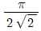
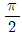
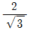
- 1
(정답률: 69%)
31. 무한히 넓은 두 장의 도체판을 d[m]의 간격으로 평행하게 놓은 후, 두 판 사이에 V[V]의 전위차를 가한 경우 도체판의 단위면적당 작용하는 힘[N/m2]은? (단, 유전율 : ε0)
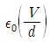
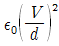
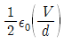
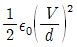
(정답률: 65%)
32. JK플립플롭에서 Jn = 0, Kn = 1 일 때 클록 펄스가 1상태라면 Qn+1의 출력상태는?
- 부정
- 0
- Qn
- 반전
(정답률: 65%)
33. 반지름이 6400[km]인 진공 구의 정전용량[F]은 약 얼마인가? (단, 진공의 유전율은
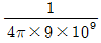
[F/m])- 3×10-4
- 5×10-4
- 7×10-4
- 9×10-4
(정답률: 56%)
34. 3분 동안에 180[J]의 일을 하였다면 소비 전력은?
- 0.1[W]
- 1[W]
- 10[W]
- 100[W]
(정답률: 95%)
35. 반도체의 특성과 관계없는 것은?
- 정류작용을 한다.
- 자기효과가 있다.
- 부의 온도계수를 갖는다.
- 도체보다 적은 저항을 갖는다.
(정답률: 77%)
36. 다음 중 마이크로프로세서의 성능을 비교하기 위한 척도로 적절하지 않은 것은?
- 마이크로프로세서의 가격
- 처리하는 워드 길이
- 클록 펄스
- 명령어 처리 속도
(정답률: 92%)
37. PN접합 다이오드에서 다음 중 어느 때 공핍층이 가장 넓어지는가?
- 순방향의 전압이 걸릴 때
- 공핍층에 빛을 조사할 때
- 역방향 전압이 걸릴 때
- 전압을 걸지 않을 때
(정답률: 81%)
38. 입출력 인터페이스에 대한 설명 중 옳지 않은 것은?
- 반드시 CPU 내에 존재한다.
- 데이터 형식상의 차이를 맞춘다.
- CPU와 입출력 방치 간의 동작속도를 맞춘다.
- CPU와 입출력 장치 사이에 존재하여 데이터의 전송이 원활하게 이루어지도록 하는 역할을 한다.
(정답률: 88%)
39. 이상적인 연산증폭기의 설명으로 틀린 것은?
- 입력임피던스 무한대
- 대역폭 무한대
- 오프셋 0
- 동상이득 무한대
(정답률: 59%)
40. 멀티바이브레이터의 특징은?
- 출력이 크다.
- 극초단파 발생에 적합하다.
- 부성저항을 이용한 발진기이다.
- 고차의 고조파를 포함하고 있다.
(정답률: 60%)
3과목: 의료안전·법규 및 정보
41. 컴퓨터에서 사용하는 정보 양의 단위인 1메가바이트[MB]는 다음 중 어느 것과 같은가?
- 100바이트
- 1024바이트
- 1048576바이트
- 1000000바이트
(정답률: 89%)
42. 의료용구의 전기 기계적 안전에 관한 공통 기준규격상 휴대형 기기에 부착한 운반용 핸들이나 손잡이는 핸들 및 그 장치수단에 그 기기 중량의 몇 배와 동등한 힘을 가한시험에서 규정한 부하에 견뎌야 하는가?
- 1배
- 2배
- 4배
- 8배
(정답률: 86%)
43. 의료기기법상 의료기기 취급자에 해당하지 않는 사람은?
- 의료기기 제조업자
- 의료기기 수입업자
- 의료기기 심사업자
- 의료기관 임대업자
(정답률: 79%)
44. 병원의 관상동맥질환 처차실, 심혈관조영실, 마취실 등 장착부를 환자의 심장 부위에 삽입 또는 접촉시켜 사용하는 의료 장소의 접지 방법으로 옳은 것은?
- 사면 접지
- 정전기 장해 방지용 접지
- 등전위 접지
- 잡음 방지용 접지
(정답률: 78%)
45. 의료기관에서 나오는 세탁물을 처리할수 있는 자는?
- 보건복지부장관의 허락을 받은 자
- 보건복지부장관에게 신고한 자
- 시장의 허락을 받은 자
- 시장에게 신고한 자
(정답률: 56%)
46. 초전도 MRI 장치에 대량으로 사용되는 가스는?
- 액체 산소
- 질소
- 아산화질소
- 액체 헬륨
(정답률: 88%)
47. 정보시스템의 보안을 위해 고려해야 할 요소가 아닌 것은?
- 독립성
- 무결성
- 기밀성
- 가용성
(정답률: 73%)
48. PACS의 임상적 파급효과 중 틀린 것은?
- 영상자료의 교육활동 용이
- 자료공유로 협동연구 원활
- 영상정보 교환에 따른 표준이 불필요
- 실시간 판독, 자동화에 의한 진료능률 향상, 방사선과 진료의 지역 분산화
(정답률: 90%)
49. 환자의 임상진료에 관련된 모든 정보의 보관소로서 임상의사의 기억을 보조, 의사결정 과정의 직접적 도구역할을 하며 병원, 임상전문가, 보험회사들 사이의의사소통의 중요한 매개체 역할을 하는 것은?
- OCS
- LIS
- EMR
- CDS
(정답률: 83%)
50. 의료기기법상 의료기기 제조업 허가를 받을 수 있는 사람은?
- 금치산자
- 마약 중독자
- 의료기기법을 위반하여 제조업 허가가 취소된 날부터 14개월이 경과된 자
- 의료기기법을 위반하여 금고 이상의 형을 선고받고 그 집행이 끝나지 아니한 자
(정답률: 92%)
51. 1980년대 중반부터 우리나라의 대형병원에서는 병원정보 시스템을 도입하기 시작하였다. 시스템을 도입하게 된 가장 큰 원인은?
- 병원간의 서비스 경쟁 심화
- 지불기관(보험회사)의 EDI 청구 강화
- 의료보험 확대 실시
- 데이터베이스 기술의 확산
(정답률: 76%)
52. 의료가스 중 에틸렌옥사이드 의 용도로 옳은 것은?
- 냉동수술용 의료가스
- 마취용 의료가스
- 살균용 의료가스
- 흡입용 의료가스
(정답률: 76%)
53. CF형 일반 의료기기의 단일고장 상태에서 접지누설전류 허용값은?
- 0.1[mA]
- 0.5[mA]
- 1[mA]
- 10[mA]
(정답률: 39%)
54. 현수지지특성이 마모, 녹 재료의 노화나 경시변화에 따른 손상이 예측되는 경우, 관련 현수지지부품의 안전율 기준은?
- 안전율을 2이상으로 할 것
- 안전율을 4이상으로 할 것
- 안전율을 5이상으로 할 것
- 안전율을 8이상으로 할 것
(정답률: 62%)
55. 의료가스의 흐름, 공급압의 하락 및 공급장치의 기능불량을 추적하고 파악하기 위해 필요한 시스템은?
- 의료가스 차단 시스템
- 의료가스 제습 시스템
- 의료가스 비상정지 시스템
- 의료가스 공급감시 시스템
(정답률: 93%)
56. 의료기기법령상에서 제시하는 의료기기 임상시험 실시기준에 해당하지 않은 것은?
- 임상시험계획서에 의하여 안전하고 과학적인 방법으로 실시할것
- 식품의약품안전청장이 지정하는 임상시험기관에서 실시 할 것
- 임상시험은 임상시험 계획의 승인 또는 변경승인을 얻은날부터 2년 이내에 개시할 것
- 임상시험 전에 임상시험자료집을 임상시험자에게 비공개로 할 것
(정답률: 90%)
57. 의료기기법령상 다음 ( ) 안에 알맞은 내용은?
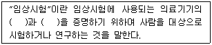
- 정확성, 보편성
- 보편성, 안전성
- 안전성, 정확성
- 안전성, 유효성
(정답률: 83%)
58. 의학 자료의 코드화에 대한 설명으로 옳은 것은?
- 의학자료를 코드화 하면 데이터의 양적 증가가 일어난다.
- 숫자코드를 부여하면 항목의 연산을 쉽게 할 수 있다.
- 숫자코드를 사용하면 새로운 코드의 생성이 어렵다.
- 코드화를 통해 데이터의 접근성이 향상된다.
(정답률: 82%)
59. DBMS에 대한 설명으로 옳지 않은 것은?
- DBMS는 응용프로그램이 데이터베이스를 공유할 수 있도록 관리해 주는 소프트 웨어 시스템이다.
- DBMS의 필수기능은 정의기능, 조작기능, 연산기능이다.
- DBMS를 사용하면 데이터 중복을 최소화 하고 데이터의 무결성을 유지해준다.
- DBMS는 응용 프로그램과 데이터베이스 사이의 인터페이스를 위한 수단을 제공한다.
(정답률: 70%)
60. 전자파가 인체에 가하는 작용이 아닌 것은?
- 전류밀도에 따른 열작용
- 활동 전위를 유발하는 광학작용
- 자기장의 누적효과에 의한 비열작용
- 신경과 근육의 활동전위를 발생시키는 자극작용
(정답률: 79%)
4과목: 의료기기
61. 다음 중 심박출량의 정의로 맞는 것은?
- 심장박동 1회당 심장에서 대동맥으로 밀어내는 혈류량
- 심장박동 1분당 심장에서 대동맥으로 밀어내는 혈류량
- 심장박동 1시간당 심장에서 대동맥으로 밀어내는 혈류량
- 심장박동 1일당 심장에서 대동맥으로 밀어내는 혈류량
(정답률: 75%)
62. 초음파를 이용한 뇌혈류진단기로 측정할 수 없는 생체 신호는?
- 심박동계수
- 혈류 속도
- 혈중 산소 농도
- 저항 계수
(정답률: 61%)
63. 레이저 발생장치의 구성에서 레이저 매질로부터 방출된 빛을 모아 한 방향으로 내보내는 장치를 말하는 것은?
- (광)공진기
- 여기원
- 레이저 매질
- 광섬유
(정답률: 72%)
64. 임상진단기기 중 하나로 시료를 회전시켜 원심력작용으로 특정 무게 또는 비중을 갖는 성분들이 서로 분리, 정제, 농축되는 원리로 액체 속의 고체입자를 분리하는 장비는?
- 원심분리기
- 자동혈구계산기
- 혈액가스분석기
- 생화학분석기
(정답률: 91%)
65. PET에서 해상도에 관여하는 인자로 옳은 것은?
- 소멸된 두 중성자 운동에너지에 의한 직진 운동 각도의 불확정성
- 방출되는 중성자의 운동에너지에 기인한 중성자의 위치와 그 소멸위치
- 검출 채널의 샘플링 간격 즉, 검출기와 검출기 사이의 간격
- 방사선 동위원소를 정맥주사로 인체에 주입한후 전신에 퍼지는동안의 데이터 획득시간
(정답률: 64%)
66. 영구형 페이스메이커의 특징이 아닌 것은?
- 전극과 본체를 모두 체내에 이식
- 응급상황에서 응급처리를 위해 주로 사용
- 크기가 작고 가벼움
- 전극은 정맥을 통해 심장에 삽입하기도 함
(정답률: 86%)
67. 혈액투석에 대한 설명으로 틀린 것은?
- 혈관통로를 위해 정맥에 카테터를 삽입한 것을 동정맥루라 한다.
- 혈액투석의 합병증으로 저혈압, 근경련, 투석 불균형증후군 등이 있다.
- 혈액투석에서 용질에 제거는 확산과 대류에 의해 이루어지고, 체액 제거는 초여과에 의해 이루어진다.
- 혈액과 상호작용하여 노폐물과 과잉 수분을 제거하면서 필요한 전해질은 보충, 유지시켜줄 수있도록 조성된 투석액이 필요하며, 농도는 혈장액과 비슷하다.
(정답률: 83%)
68. X-선관에서 발생되는 X-선의 성질에 대한 설명으로 옳은 것은?
- 진동수가 높으면 에너지가 작다.
- 진동수가 높으면 에너지가 크다.
- 파장이 짧을수록 더 낮은 전압이 필요하다.
- 파장이 길수록 투과 깊이가 깊다.
(정답률: 83%)
69. 인공호흡기의 호흡조절방식 중 대상자의 환기노력과 동시에 공기를 전달하는 방식은?
- 동시성 간헐적 강제환기
- 간헐적 강제환기
- 호기말 양압호흡
- 지속성 기도양압
(정답률: 78%)
70. X-선을 감지하는 장치에 관한 설명으로 적절하지 않은 것은?
- 종류로는 X-선 증감지, 영상증배관, 고체평판디렉터가 있다.
- X-선 증감지는 CdWO4와 Gd 등의 희토류 합성물을 형광물질로 이용한다.
- 영상증배관에는 섬광체와 접착된 광도전체에서 광전자를 발생시킨다.
- 증감지와 형광물질이 두꺼울수록 고휘도, 고해상도 영상을 얻을 수 있다.
(정답률: 86%)
71. 감마카메라를 구성하는 요소들에 대한 설명으로 틀린 것은?
- 광전자 증배관 : 가시광선을 검출하여 전기신호로 변환해주는 장치
- 섬광결정체 : 높은 에너지의 감마선을 낮은 에너지의 가시광선으로 바꾸어주는 역할
- 위치감지회로 : 감마선의 변화량에 의해 출력전압이 미분형태로 얻어지므로 이를 이용하여 감마선이 들어온 위치를 계산
- 시준기 : 인체 내에서 방출되는 감마선을 제한하여 일정한 방향으로 나오는 감마선만이 섬광결정체에 도달하도록 해주는 기구이다.
(정답률: 64%)
72. 체외충격파쇄석기에서 금속막을 전자석으로 진동시켜 발생되는 압력파를 집속시켜 충격파를 만드는 방식은?
- 수중방전방식
- 압전소자방식
- 미소발파방식
- 전자진동방식
(정답률: 78%)
73. 수액펌프의 종류 중 회전형 롤러가 장착되어 Ⅰ,Ⅴ관재료를 환자측 방향으로 회전하면서 압축하여 유체의 흐름을 밀어내는 방식으로 동작하는 것은?
- 선형 연동펌프
- 교환형 피스톤펌프
- 회전형연동펌프
- 횡격막형 피스톤펌프
(정답률: 84%)
74. 방사선 치료에 대한 설명으로 틀린 것은?
- 종양의 위치에 따라 방사선을 선택하다.
- 방사선 에너지가 인체를 구성하는 원자, 분자로 이행되어 화합물의 조성을 변화시킨다.
- 방사선을 받은 세포는 대부분 세포 분열 시 기능 장해, 증식 정지가 일어난다.
- 방사선은 암 조직에만 장애를 일으키고 정상 조직에는 영향이 없다.
(정답률: 88%)
75. 다음 중 CT-번호가 가장 큰 것은?
- 나일론
- 뼈(경골)
- 공기
- 금속성 보철물
(정답률: 80%)
76. 체내에서 발생하는 심음이나 호흡음을 비롯한 동맥음, 장잡음, 혈관음을 청취하여 몸 상태의 이상 유무를 확인하기 위해 사용하는 장비는?
- 청진기
- 혈류계
- 혈압계
- 고주파 치료기
(정답률: 92%)
77. 전기치료기를 주파수에 따라 분류할 수 있다. 중주파전류는 1000~10000Hz 영역의주파수를 갖는 전류를의미한다. 이러한 중주파 전류는 주로 어떤 치료에 응용되는가?
- EST
- ICT
- FES
- TENS
(정답률: 67%)
78. 다음 그림은 마취기의 구성도로서 크게 가스공급부와 호흡회로부로 나눌 수있는데 마취가스 제거장치는 어느 곳인가?
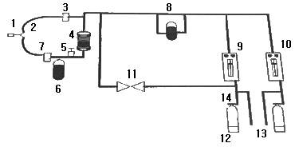
- 1
- 2
- 5
- 11
(정답률: 88%)
79. 환자감시장치에서 마취 환자의 자발호흡 상태 또는 환자의 환기상태를 평가할수 있는 기능은?
- 심전도
- 비관혈식 혈압
- 호기말 이산화탄소 분압
- 혈중 산소포화 농도
(정답률: 83%)
80. 직접혈압측정에서 혈압 파형을 왜곡없이 기록하기 위한 방법으로 옳지 않은 것은?
- 진동계의 주파수 특성이 충분히 높아야한다.
- 카테터는 가능한 길고 가늘어야한다.
- 카테터내에 기포가 들어가지 않도록 해야한다.
- 카테터의 재질이 단단해야 한다.
(정답률: 66%)
5과목: 의용기계공학
81. 생체재료의 표면 특성 분석법 중 재료의 화학적 결합을 분석하는 시험법은?
- 주사전자현미경
- 적외선 스펙트럼분석법
- 접촉각분석법
- 원자력 현미경
(정답률: 79%)
82. 단면적이 100cm2인 물체에 200N의 인장하중이 작용할 때 응력(stress)은?
- 20[Pa]
- 200[Pa]
- 2000[Pa]
- 20000[Pa]
(정답률: 71%)
83. 다음 ( )안에 알맞은 단어를 옳게 나열한 것은?
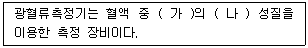
- (가) 적혈구, (나) 전기적
- (가) 적혈구, (나) 광학적
- (가) 헤모글로빈, (나)광학적
- (가) 헤모글로빈, (나) 전기적
(정답률: 72%)
84. 두께 h이고 넓이가 A인 판이 힘F에 의하여 속도 u로 점도가 η인 유막 위를 미끄러질 때 단위면적당 힘에 해당하는 유체속의 전단 강도 γ는?
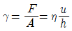
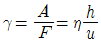
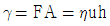
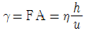
(정답률: 58%)
85. 자전하는 양자가 강한 외부자기장에 노출되었을 때 그 외부자기장을 중심으로 일정한 각을 유지하며 회전하는 현상을 무엇이라 하는가
- 자화
- 세차운동
- 공명
- 자기모멘트
(정답률: 81%)
86. 두 개 이상의 금속원소로 구성된 기기의 부식에 대한 설명으로 옳은 것은?
- 합금을 구성하고 있는 원소 간에 이온화 경향의 차이에 의한 Galvanic corrosion이 발생한다
- 합금을 구성하고 있는 원소 간에 원자량의 차이에 의한 Galvanic corrosion이 발생한다.
- 합금을 구성하고 있는 원소 간에 원자의 크기의 차이에 의한 Galvanic corrosion이 발생한다.
- 합금은 순금속에 비하여 항상 내부식성이 강하다.
(정답률: 70%)
87. Ti의 특성을 잘못 설명한 것은?
- 기계가공이 어렵다.
- 내부식성이 우수하다.
- 내마모성이 우수하다.
- 마찰계수가 작다.
(정답률: 49%)
88. 정형외과적으로 사용되는 임플란트를 설계하기 위해서는 골(뼈) 조직의 기계적 특성을 파악해야한다. 다음 중 골조직의 기계적 특성에 영향을 미치는 인자가 아닌 것은?
- 온도와 습도
- 인장 방향
- 측정하는 사람
- 골 조직 시편을 채취한 후 경과한 시간
(정답률: 82%)
89. 생체적합성, 생체안전성 평가에 대한 설명으로 틀린 것은?
- 생 체적합성 및 안전성 평가는 재료의 조직을 이용한 시험관적평가와, 동물 모델 평가와 인체를 대상으로 임상평가를 실시하는 생체 평가로 분류된다.
- 생체재료나 임플란트가 인체에 삽입되면 생체조직에 영향을 미칠 수 있다.
- 생체조직도 생체재료에 영향을 주어서 생체재료의 수명을 단축시킬 수 있다.
- 시험관적평가와 생체평가의 결과는 거의 일치한다.
(정답률: 85%)
90. 초음파 탐측자의 초음파 발생소자가 음파를 발생시키는 주요 원인은?
- 압전 효과
- 음향 전기적 효과음
- 음향 광학적 효과
- 도플러 효과
(정답률: 68%)
91. 카본 세라믹의 특성으로 옳지 않은 것은?
- 탄성계수가 뼈와 유사하다
- 불활성이어서 독성 및 이물반응이 적다
- X-선 검사에서 잘 보인다
- 인공판막이나 인공혈관 벽에 이용된다.
(정답률: 62%)
92. 방사선이 생체에 미치는 영향의 조합으로 틀린 것은?
- 물리적 작용 - 방사선 에너지의 흡수
- 화학적 작용 - 1차생성물 및 중간생성물의 작용
- 생물학적 작용 - 유전적 영향
- 생화학적 작용 - 피부화상
(정답률: 77%)
93. 수술용 흡수성 봉합사로 사용되는 의료용 고분자 재료는?
- Teflon
- PP
- PGA
- Silicone
(정답률: 75%)
94. 다음 중 올바르게 설명하고 있는 것은?
- 표재성 암의 온열치료에는 2.5[kHz]의 전자파가 이용된다.
- 두피 상에서 계측할 수 있는 뇌자계의 세기는 10-6 ~ 10-7T이다.
- 신장 종양을 1[MHz]의 초음파 장치로 가시화 할 수 있다.
- 정상 성인의 산열량은 5~15[W]이다.
(정답률: 59%)
95. 전기적 안전에서 가장 중요한 것은 전기쇼크이다. 다음 중 전기쇼크에 대한 설명으로 틀린 것은?
- 전자제품을 만졌을 때 짜릿하다고 느낄 정도의 최소한의 전류를 최소감지전류라 한다.
- 전기쇼크로 인하여 자력으로 손을 뗄 수 없게 되는 한계를 이탈전류라 한다.
- 전류가 피부를 통하여 체내에 흘러들어가고 다시 체외에 나올 때 발생하는 전기쇼크를 매크로쇼크라고 한다.
- 마이크로 쇼크란 인체에 1[mA] 이상의 전류에 의한 감전을 말한다.
(정답률: 77%)
96. 의료용 스테인리스 스틸을 구성하는 원소 중에서 가공성을 좋게 하기 위하여 전성 향상의 목적으로 첨가되는 원소는?
- 철
- 크롬
- 니켈
- 탄소
(정답률: 59%)
97. 지면으로부터 v의 속도로 윗방향으로 던져진 공(질량 m)이 올라갈 수 있는 최대 높이는?
- mv
- mgh
- mv2 / 2
- v2 / 2g
(정답률: 69%)
98. 운동량과 충격량에 대한 설명 중 틀린 것은?
- 운동량은 운동의 효과를 나타내는 물리량이며, 질량과속도의 곱을 나타낸다.
- 운동량의 변화를 충격량이라 하며, 충돌 시 받은 힘과 충돌 시간의 곱으로 나타낸다.
- 외부에서 힘이 작용하지 않는 한 물체의 운동량은 변하지 않는다.
- 운동량 보전은 두 물체사이에서는 적용되지만, 한 물체에서는 적용되지 않는다.
(정답률: 83%)
99. 정상 보행시 유각기와 입각기의 비율로 가장 적절한 것은?
- 4 : 6
- 5 : 5
- 6 : 4
- 7 : 3
(정답률: 58%)
100. 혈액응고에 관한 설명으로 옳지 않은 것은?
- 혈장단백딜이 모여 피브리노겐이라는 그물모양의 젤을 형성하여 응고된다.
- 인공재료가 혈액과 접촉하였을 때 그 재료표면에 혈액응고가 일어난다.
- 산성 다당류의 일종인 헤파린은 혈액응고반응을 억제한다.
- 혈액응고는 피브리노겐 주요 인자이며 혈소판은 혈액응고를 억제한다.
(정답률: 76%)